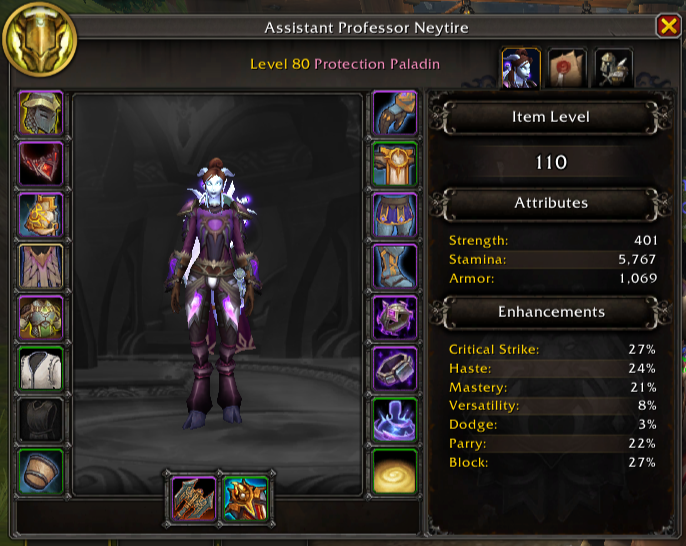
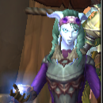
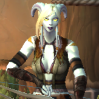

About Neytire
Neytire
is a level 80 Protection Paladin of the Khadgar realm, known for her
resilience, strength, and unwavering presence on the battlefield.
Standing at the front line, she shields her allies from harm—absorbing
damage and maintaining control even in the most intense encounters.
Her name is inspired by Neytiri from James Cameron’s
Avatar, a Na’vi warrior whose character embodies
strength, connection to nature, and spirit. While not directly
translated, the name is associated with “light colors” and “life,”
reflecting both vitality and purpose—qualities that shape
Neytire’s role as a protector.
With a focus on endurance and stability, her journey is defined by
discipline and responsibility. Whether holding the line or supporting
her allies, Neytire remains steadfast—protecting, enduring, and
guiding others through the chaos of battle.

Neytire · Level 80 Protection Paladin · Khadgar Realm
Inspired by Neytiri from Avatar — representing strength,
life, and spirit.
Neytire’s characteristics
- Discipline: Protection Paladin
- Affinity: Defense and support
- Combat Style: Frontline tanking and control
- Strengths: Resilience and group protection
- Focus: Stability and endurance
- Realm: Khadgar
Neytire’s Friends
-
Noor the Hallowed

Noor the Hallowed is a level 80 Elemental Shaman and one of Neytire’s closest allies. Channeling the power of lightning and fire, she supports from a distance with controlled, elemental precision.
-
Silverbow the Seeker

Silverbow the Seeker is a level 80 Marksmanship Hunter on the Khadgar realm and one of Neytire’s trusted companions. With precise aim and a calm, focused approach, she excels at ranged combat, striking from a distance while adapting to any situation.